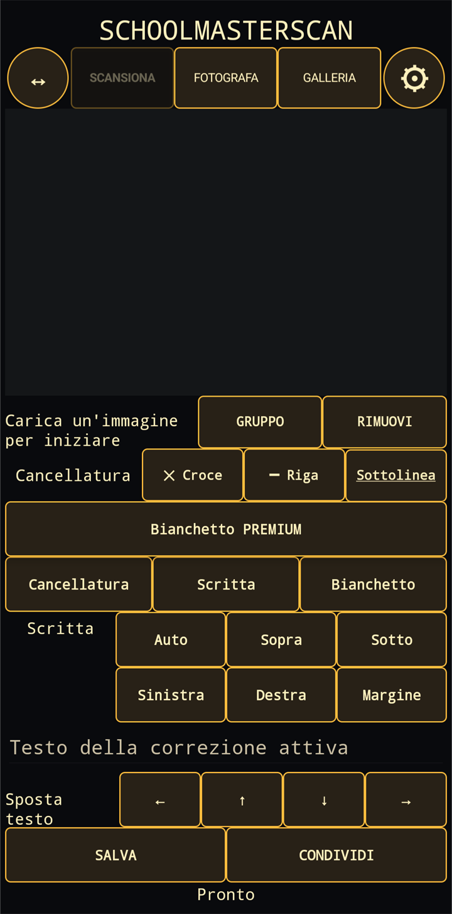

1. Acquisisci un’immagine
Scansiona è la modalità predefinita: SchoolMasterScan richiama lo scanner documenti integrato in Android/Google Play services e riporta il documento acquisito nell’editor. Puoi anche usare Fotografa oppure scegliere un’immagine già presente con Galleria. Il pulsante ↔ adatta l’immagine all’area di lavoro; l’ingranaggio apre le impostazioni.
2. Seleziona e segna il testo
Dopo il riconoscimento del testo, tocca una parola nell’immagine. Gruppo estende la selezione e Rimuovi elimina una selezione. Applica quindi una croce, una riga o una sottolineatura. I colori e lo stile predefinito si regolano nelle impostazioni.
3. Inserisci una correzione
Scrivi il testo nel campo della correzione attiva e scegli la posizione: automatica, sopra, sotto, a sinistra, a destra o a margine. Le frecce consentono piccoli spostamenti finali.
Bianchetto Premium
Bianchetto è una funzione Premium opzionale acquistabile separatamente. Consente di coprire una parte dell’immagine e, se necessario, aggiungere nuovo testo nell’area corretta.
4. Salva o condividi
Salva crea l’immagine JPEG finale nella galleria del dispositivo. Condividi apre il selettore Android per inviarla a un’altra app. Prima di terminare, controlla sempre il risultato del riconoscimento e delle correzioni.